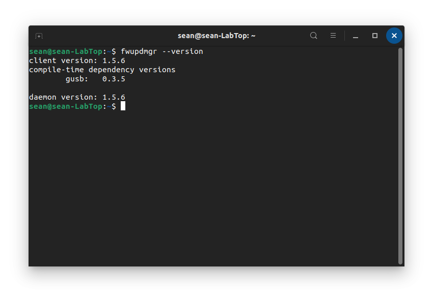
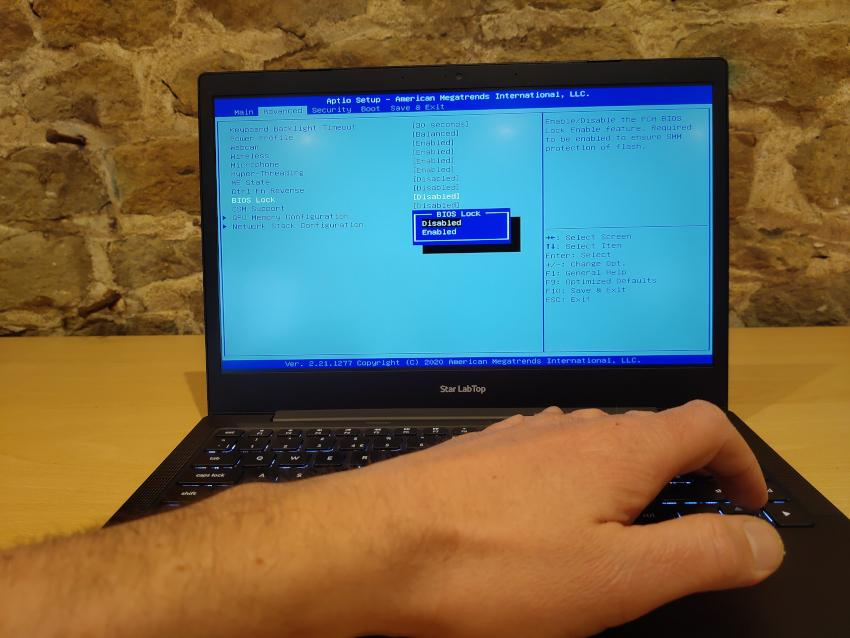
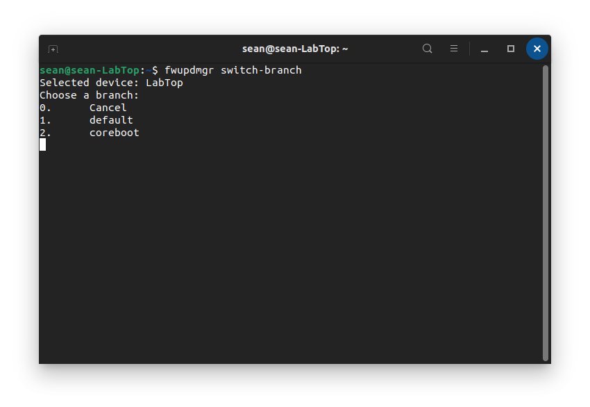

Flashing with fwupd
Requirements:
fwupd version 1.5.6 or later
The battery must be charged to at least 30%
The charger must be connected (either USB-C or DC Jack)
BIOS Lock must be disabled
Supported Linux distribution (Ubuntu 20.04 +, Linux Mint 20.1 + elementaryOS 6 +, Manjaro 21+)
fwupd 1.5.6 or later To check the version of fwupd you have installed, open a terminal window and enter the below command:
fwupdmgr --version
This will show the version number. 1.5.6 or greater will work.

On Ubuntu 20.04, Ubuntu 20.10, Linux Mint 20.1 and elementaryOS 6, fwupd 1.5.6 can be installed from our PPA with the below terminal commands:sudo add-apt-repository ppa:starlabs/ppa
sudo apt update
sudo apt install fwupd
On Manjaro:
sudo pacman -Sy fwupd-git flashrom-starlabs
Instructions for other distributions will be added once fwupd 1.5.6 is available. If you are not using one of the distributions listed above, it is possible to install coreboot using a Live USB.
Disable BIOS Lock BIOS Lock must be disabled when switching from the standard AMI (American Megatrends Inc.) firmware to coreboot. To disable BIOS Lock:
1. Start with your LabTop turned off. Turn it on whilst holding the F2 key to access the BIOS settings.
2. When the BIOS settings load, use the arrow keys to navigate to the Advanced tab. Here you will see BIOS Lock.
3. Press Enter to change this setting from Enabled to Disabled

4. Next, press the F10 key to Save & Exit and then Enter to confirm.
Switching Branch
Switching branch refers to changing from AMI firmware to coreboot, or vice versa.
First, check for new firmware files with the below terminal command:
fwupdmgr refresh --force
Then, to change branch, enter the below terminal command:
fwupdmgr switch-branch
You can then select which branch you would like to use, by typing in the corresponding number:

You will be prompted to confirm, pressy to continue or n to cancel.
Once the switch has been completed, you will be prompted to restart.
The next reboot can take up to 5 minutes, do not interrupt this process or disconnect the charger. Once the reboot is complete, that’s it - you’ll continue to receive updates for whichever branch you are using.
You can switch branch at any time.